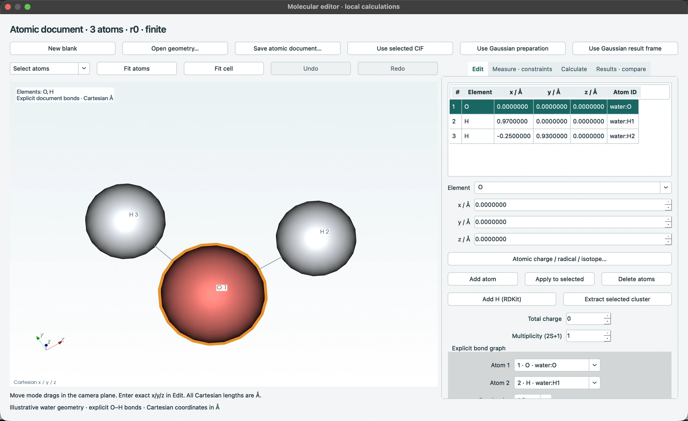

Edit a water molecule
Assign atoms and O–H bonds and edit the coordinates of an illustrative water molecule. The screenshot shows an unoptimized starting geometry. Input and result structures can be retained separately.
CalcLens brings crystal inspection, molecular editing and Gaussian result review into one desktop workspace.

A short distance in a CIF only makes sense once you know which atoms and cell images it connects. A Gaussian energy value is easier to interpret when you can find the geometry that produced it.
CalcLens keeps the selected atoms, coordinates and source lines together. Reopening a project restores the structures and calculation conditions you were reviewing.
Inspect periodic images, distances, angles, dihedrals, layer thickness and gaps.
Follow an optimizer step to its original SCF energy and prepare a new input from that frame.
Edit atoms and bonds, undo an edit, and retain input and result structures separately.
MMFF94s, UFF, GFN2-xTB and PySCF DFT were exercised on finite small molecules. Energy comparisons check composition and numerical settings.
The Mac 0.12 molecular editor and new calculation engines are planned for a later Windows feature release.
The current DFT implementation covers finite molecules on CPU.
Select either screenshot to see the full-size application window.

Assign atoms and O–H bonds and edit the coordinates of an illustrative water molecule. The screenshot shows an unoptimized starting geometry. Input and result structures can be retained separately.

Inspect the SCF history and printed force and displacement criteria in a public Gaussian example. Select a frame to follow its coordinates and source references.
In the expanded graphite cell from COD 9011577, the shortest periodic distance is 1.42258 Å and the gap between nuclear planes is 3.3555 Å. A separate unrelaxed single-sheet derivative has a chosen repeat height of 20 Å. This is a different example from the illustrative graphene model pictured above.
For the public cclib divinylbenzene example, optimizer step 3 refers to the energy on source line 1857. A follow-up input prepared from that geometry retains the frame after the project is reopened.
Select a package for your operating system. On first launch, choose Install to download its runtime.
For Apple Silicon with macOS 15 or later. Open the DMG and copy the app to Applications.
Download DMG ↓For Windows x64. Extract the complete ZIP and launch CalcLens.exe.
The new Mac 0.12 molecular workbench is not included.
Download ZIP ↓The Mac app is ad-hoc signed and has not been notarized by Apple. The Windows launcher is unsigned. Your operating system may show a warning; verify the download source and SHA-256 digest.
Installation & licenses · Checksums & release files · Release verification